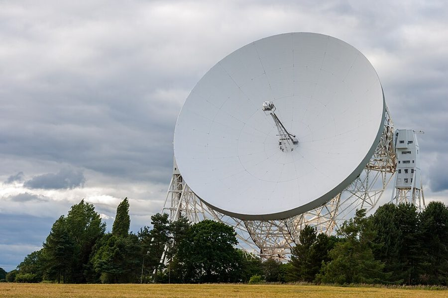
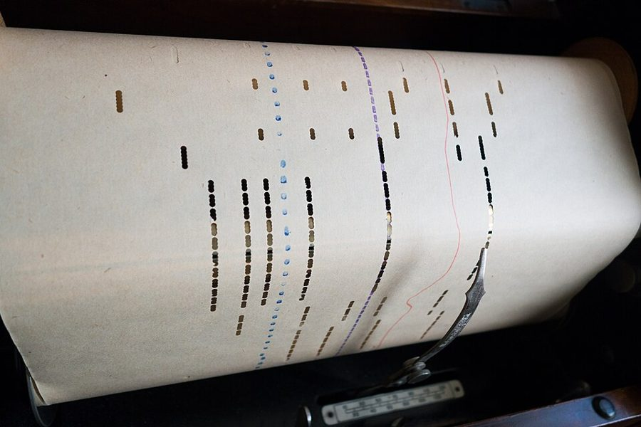
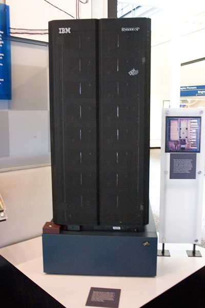

Colonies of genes they may be
Colonies of genes they may be …
它们也许是基因的群落（但……）
把表语提到句首的让步句，等于 Although they may be colonies of genes, … 读的时候重音在后半句：但在行为上，身体确实成了一个个体。
第 4 章的前半。前三章说身体是基因造出来的生存机器，这一章问：在什么意义上能说基因「控制」身体的行为？批评者心里的画面是木偶线，基因每时每刻牵着动物走。Dawkins 一连换了好几样机器来比：凸轮和计算机、瓦特调速器和导弹、下棋程序，最后是一部科幻小说里从仙女座发来的电文。读的时候抓两条线：没有意识的机器在什么意义上「有目的」；造机器的人不在场时，机器听谁的。

第 3 章最后一段预告：下一章讲生存机器本身，以及在什么意义上可以说基因控制它们的行为。这一页就从这里接上。第 1 段先回头接第 2 章的原始汤：汤里的养料用完以后，生存机器分成植物和动物两支，动物走上了「快速动作」这条路。这一页停在第 24 段：基因只能事先编程。下一页接着讲基因怎样对未知的将来下注，怎样让大脑去学习和模拟。
基因既然不能每时每刻牵着身体走，说「基因控制行为」还算不算数？
读的时候带着这几个问题。不用先找答案，读完回来对照「检查一下理解」。
这一页几乎全是比喻，一个接一个，读着容易忘了它们在替哪个论点服务。§1 是交代：先说身体是基因的群落，再宣布以后图方便把个体当行动者来讲。§2 换成工程师的眼光看动物：动作要快，难处在什么时候收缩哪块肌肉，从凸轮、打孔纸卷一路比到计算机和神经元。§3 从「定时」转到「目的」，用调速器说明没有意识的机器也能有目标。§4 才正面碰这一章的问题：造机器的人是不是在操纵它？下棋程序是第一个答案。§5 换第二个比喻，仙女座的电文，中间插进火星上的宇航员和鲸歌，读到这里会觉得跑了题，其实讲的是同一件事：信号来回太慢，话就只能一次说完。到第 24 段，作者才把这些比喻收回到基因身上。
作者落在哪：基因对行为的控制是间接的：它们来不及每时每刻发指令，只能事先造好一个快速的大脑，写进一般的规则和「忠告」，然后放手。基因既像发电文的仙女座人，又是电文本身。
这一页是原书第 4 章的第 1–5 节。原书各章没有小标题，粗体的节名是本站起的，下面是这一节第一段开头的几个词，在电子书里搜它就能跳过去。读完打个勾。
先把这一页用到、作者默认你懂的几个概念讲一遍。讲的是概念本身，作者拿它推出什么，读原书时自己看。前几章讲过的生存机器、原始汤、利他行为，点进去看。
生物的行为看上去处处有目的：鸟筑巢像是「为了」孵蛋，猎豹追羚羊像是「想要」抓住它。哲学上把「为了某个目的而发生」叫目的论（teleology），这种说法在科学里一向可疑，因为它好像要求将来的结果反过来起作用，或者背后得有一个在打算的心灵。1958 年，生物学家 Colin Pittendrigh 提议另起一个词 teleonomy，专指看上去指向目标、其实由机制和自然选择造成的现象，Mayr 等人后来沿用。程序员很熟悉这种区分：恒温器、失败重试、按负载自动扩容，都在「力求」某个状态，没有人以为它们有愿望。说一样东西有目的，只是说它会自己回到某个状态。
在这一页：第 13 段：作者说我们忍不住把自己的感受安到「寻找」食物的动物身上；他把意识问题放到一边，只谈表现得好像有目的的机器。
控制论的基本概念。系统不断量出「现在的状态」和「设定的状态」差多少，再用这个差推动自己往回调：差得越多，调得越狠，于是差距越来越小。叫「负」反馈，是因为它抵消偏差；反过来放大偏差的叫正反馈，比如话筒对着音箱时的啸叫。空调恒温、骑车保持平衡、服务器按负载增减实例，都是负反馈。它有个老毛病：从量到调之间有延迟，或者调得太猛，就会冲过头再拉回来，来回晃。1868 年 Maxwell 的论文《论调速器》头一次用数学分析了这种晃动，常被看作控制理论的起点。
在这一页：第 14 段用它解释调速器，第 15 段的导弹是加强版。译本：「目的机器」是作者给这类机器起的名字。
信号发出到产生效果之间的延迟，网络里叫延迟（latency）。延迟一长，「你一句我一句」的交互就不划算了：地球和火星之间，无线电单程要 3 到 22 分钟，看两颗行星在轨道上的位置，所以没法像玩遥控车那样实时操纵火星车，火星车要靠预先装好的软件自己避障，地面只给它一段一段的计划。写程序的人也熟悉这条规律：跨大洋调接口，与其来回几十次小请求，不如一次把要的东西打包发过去。延迟决定了控制权该放在哪一端：离事情越远、信号越慢，越要把规则事先交给现场的那一方。
在这一页：第 14 段末尾第一次出现（调速器因时滞而晃动）；第 19 段起成了主角，第 20–24 段用仙女座的电文把它讲透。
按在书里出现的顺序排，标题前是节号。只讲到读懂这一页需要的程度。

第 7 段列举的定时装置，今天多半只在博物馆里见得到。凸轮是一个不圆的轮子，匀速转一圈，压在它上面的顶杆就按轮廓起落一遍，把简单的转动变成有节奏的一串动作；八音盒的转筒是同一个道理。自动钢琴和蒸汽风琴用打了孔的纸卷或卡片，和早期计算机的穿孔卡是一家。作者列这些，是想说动物也要解决同一个问题：在对的时刻启动对的部件。他接着说生存机器跳过了凸轮和打孔卡，用的东西更像电子计算机，虽然神经元的内部工作方式和晶体管完全不同。
James Watt（1736–1819）1788 年把离心调速器装到自己的蒸汽机上，用来稳住转速。这种装置不是他发明的，风车和水磨上早有类似的东西，装到瓦特蒸汽机上以后才出了名，一般就叫瓦特调速器。第 14 段讲了它怎样工作：一对铁球随机器旋转，转得越快甩得越开，抬起臂杆，臂杆连着进汽阀，把蒸汽关小；转慢了，铁球落下，阀门开大。作者选它，是因为它是「没有意识却有目标」最经典、最容易看懂的例子。

1976 年作者写下第 17 段时，最好的下棋程序还远不是特级大师的对手。1989 年他在注 14 里承认这话过时了，引了英国《Spectator》杂志象棋专栏作者 Raymond Keene 的评论：1988 年 8 月的美国公开赛上，一台叫 Deep Thought 的机器赢了曾击败过 Karpov 的加拿大棋手 Igor Ivanov。Deep Thought 出自卡内基梅隆大学许峰雄等人之手，名字借自 Douglas Adams 小说里那台超级电脑；同年 11 月它又在比赛里赢了特级大师 Bent Larsen。后来的事见「对照今天」。
A for Andromeda 原是 BBC 1961 年播出的七集电视剧，Hoyle 出故事，电视制作人 John Elliot 编剧，1962 年两人合写成小说，后来又有续集。这部剧也是演员 Julie Christie 的第一个重要角色。作者在第 19 段说，小说没有明说它背后最重要的科学道理，他替 Hoyle 和 Elliot 挑明：这道理就是时滞。他记的细节和原作有一处出入：据剧情介绍，收到信号的是一座虚构的射电望远镜，不是 Jodrell Bank。注 15 讲了距离的出入，见下面的尾注一节。
Jodrell Bank 天文台在英格兰西北部，属于曼彻斯特大学。页首照片里这台 76 米口径的 Lovell 望远镜 1957 年建成，当时是世界上最大的可转动射电望远镜。作者在第 22 段让它收到了仙女座的电文。
第 21 段引 Payne 的说法：海水在某一深度的声学性质很特别，鲸极响的歌声理论上能传遍全球。作者接着用时滞来解释鲸歌的长度：一来一回近两小时，鲸就像火星上的宇航员，只能唱长独白，一首约八分钟不重复，唱完再从头来。这个解释是作者自己提出的（I suggest），不是 Payne 的结论，后来怎样见「对照今天」。
第 24 段末尾的星号通向这场争论。Midgley 1979 年在《哲学》（Philosophy）杂志上发表 Gene-Juggling，猛烈批评这本书；文章开头一句说基因无所谓自私不自私，就像原子不会嫉妒。她的文章也针对哲学家 J. L. Mackie：Mackie 前一年在同一刊物上借这本书的模型讨论道德。作者 1981 年在同刊发表 In Defence of Selfish Genes 回应。注 16 里作者称她「someone called Mary Midgley」，这种提名字的方式在英语里带着轻蔑。
按节排，每节前面是分节地图里的节名。标着「每个字都认识」的，是熟词生义、习语和反话，最容易读错。灰色的那几个字是原句里的位置，在电子书里搜它就能找到。
对着中译本（40 周年增订版）读的时候看这一节。下面是译本这几节和这一页尾注里会让人读错的地方：灰字是英文原文那一处的几个词，在英文电子书里搜它；方框里是译本的原句，在译本电子书里搜它。措辞别扭但意思没错的不收。全书的勘误汇总在译本勘误。
… why, or how many times independently, …
译本：「整个过程经过几个独立的阶段才得以完成」
原文说：多细胞的身体是什么时候、为什么、在演化史上独立出现过几次，我们都不知道。说的是不同类群各自演化出多细胞，不是一个过程分几步完成。
… a trend which has dominated the …
译本：「因此，过去20年来微型化是主宰电子工业」
原文：神经元比晶体管慢，但在微型化上走得远得多，而微型化正是电子工业二十年来的大趋势。没有「因为晶体管不如神经元，所以电子工业追求微型化」的意思。
… or, when they are very large, …
译本：「如果是很大的神经元，它们也存在于大脑里」
原文：短轴突的神经元聚成密集的神经组织，这种团块叫神经节，特别大的就叫脑。不是「很大的神经元住在脑里」。
… seems to be well calculated to help …
译本：「似乎能够深思熟虑去帮助动物的基因」
well calculated to 是「恰好适合于」：行为看上去正好有利于基因生存。这一节要说的是「看似有目的，不需要意识」，译本给动物加上了思考，正好拧了。
… it may actually come to rest …
译本：「机器能自动停止运转」
原文：达到「想要的」状态时，机器可能（may）就此稳定下来，不再往回调。蒸汽机并不停，它照样以那个转速转。译本还丢了「可能」，而同一段末尾正说这类机器常常来回晃。
… So much for the trivial non-solutions …
译本：「这些仅仅是琐碎的问题」
原文：给每个局面列好棋、把所有走法算到底，这两种都是不成立的「解法」，不必再提。接下来才讲给程序编下棋本领真正难在哪。译本读着像在说难题无关紧要。
… bishops move in a diagonal …
译本：「例如“象走田”」
原文讲的是国际象棋：象沿斜线走，格数不限。后面那句坐标公式（横纵坐标加上同一个数，正负号可以不同）说的正是这个。「象走田」是中国象棋的规矩，和公式对不上。
… seems to lack explicit mention of …
译本：「似乎有意避而不谈」
原文只说小说似乎没有明确提到这个最重要的道理，留给读者去想，没说两位作者是故意的。时滞这层意思是 Dawkins 自己从小说里读出来的。
… separated from each other by twelve generations …
译本：「都会被十二代人一代一代地传达下去」
原文：一问一答要 400 年，地球这边先后两次发信的人，中间隔着十二代。不是一条消息由十二代人接力传下去。
… I suggest this as an explanation …
译本：「在我看来，座头鲸的独唱往往持续8分钟」
原文是「我提出这一点作为一种解释」，作者的猜想；译本这一句最后说「其原因就在于此」，读着像定论。这个猜想后来怎样，见「对照今天」。
… is an eminent astronomer and the …
译本：「也是一名卓越的宇航员」
astronomer 是天文学家。Hoyle 是剑桥的天体物理学家，从没上过太空（见上面「书里的人和研究」）。
… as if it were consciously working …
译本：「它们都有意识地提高它们胜出的概率」
原文：生物学家谈动植物或基因时，常说得好像（as if）它们在有意识地盘算怎样更成功，这是图方便的说法。译本说成它们真的有意识，而整条注要回应的正是这个误会。
The genes too control the behaviour of their survival machines, not directly with their fingers on puppet strings, but indirectly like the computer programmer.— §4 第 19 段。本站译：基因也控制它们的生存机器的行为，但不是直接用手指牵着木偶线，而是像计算机程序员那样间接地控制。
这是这一章的主句，也是有人说这本书是「基因决定论」时最该拿出来对质的一句。关键词是 indirectly 和 like the computer programmer：基因不是在场的操纵者，而是事先写程序的人。前一段刚说过，程序员能做的只是事先把机器设置好，对局时机器全靠自己。常见的误读是只记住前半句「基因控制行为」，把它理解成每一步都由基因决定，作者恰恰是要拆掉这种想象。
But the genes are not only the Andromedans who sent the coded instructions; they are also the instructions themselves.— §5 第 24 段。本站译：但基因不只是发出编码指令的仙女座人，它们也是指令本身。
这是作者对自己的比喻打的补丁，口气是认真的下判断。仙女座人发完电文还待在仙女座，安然无恙；基因却随身体一起造出来、住在身体里，自己就是那份指令，机器干得好，指令才被复制下去。漏读了后半句，就会把基因想成远方有意图的主人，又回到这一章想拆掉的那幅图。
正文里的星号是 1989 年第二版加的，点了跳到书后的尾注。下面是这一页的每个星号：注里说了什么，值不值得现在就点开。英文是星号前紧挨着的几个词，在电子书里搜它就能找到那个星号。
… regarded as analogous in function to computers.*
先回应死抠字眼的批评：大脑内部的工作方式确实和计算机很不一样，但他说的是功能相似，处理数据、识别模式、存储、协调动作。接着承认两处过时：头骨里塞得下的晶体管已数以十亿计；下棋程序已能威胁大师，并整段引《Spectator》对 Deep Thought 一局棋的评论。最后他留意到评论员不由自主地用描写人的词形容机器，还说乐见程序拿世界冠军，人类需要学点谦卑。短，好读，值得点开。
… in the constellation of Andromeda.*
小说和续集说法不一：第一部把那个文明放在银河系里 200 光年外，续集却搬到仙女座星系，作者说约 200 万光年（今天的测量约 250 万光年）。他说读者可以随意替换，论点不受影响。第二段称 Hoyle 的《黑云》是他最喜欢的科幻小说，又批评 Hoyle 和 Wickramasinghe 合写的一批新书把达尔文主义歪曲成纯靠运气的理论，说一个领域的名家不等于别的领域的权威。可以跳过。
… strategies and tricks of the living trade.*
注里说，把动植物或基因说得好像在有意识地盘算（比如把雄性比作冒险的赌徒），已是生物学家的日常说法；这种方便的语言本身无害，只怕落到不懂它、或者「懂得太多专会误解」的人手里。接着点名批评 Mary Midgley 1979 年的文章，提到自己在同一刊物上的回应，还借 Medawar 的话讽刺受教育超过了分析能力的人。火气很大，值得读，但要分清他的论点和他的情绪。译本这条注有一处把意思译反了，见上面的译本勘误。
读完这一页的几节再看。下面是作者在这几节里的论点，由本站按论点重新组织，不按原书的顺序；每条下面是依据所在的段落，拿不准就回书里那几段再读一遍。
作者更愿意把身体看作基因的群落，并承认很多生物学家不同意。他说这个分歧多半只是学术上的：基因之间的合作已让身体在行为上成了协调的整体，所以图方便，可以把个体说成在「努力」增加自己的基因，这是一种近似。
§1 第 2–4 段机器的「目标」可以定义为它趋向回到的状态。调速器靠负反馈稳住转速，导弹靠更复杂的反馈追踪目标，都不需要假定任何接近意识的东西。作者把动物有没有意识的问题放在一边，只谈表现得好像有目的。
§3 第 13–15 段动物的特点是快速、可逆的动作，关键是肌肉在对的时刻收缩；大脑接收感官输入、参照记忆、协调肌肉，功能上类似计算机，内部原理却完全不同。（1989 年的注 14 坚持「功能相似」，同时承认晶体管和下棋两处已过时。）
§1 第 5–6 段，§2 第 7–12 段说计算机不会真下棋、只会照人的吩咐做，是误解。程序员不给每个局面列答案，也不在对局时插手，只能事先给规则和「忠告」，然后让程序自己下。基因控制行为也是这样，间接，像程序员。
§4 第 16–19 段仙女座人离地球 200 光年，只能把造计算机、编程序的指令一次发出，此后计算机全靠自己。基因靠控制蛋白质合成起作用，造胚胎要几个月，行为却以毫秒计，所以只能事先造一台快速的大脑，教它一般的门道。基因还不止是发指令的一方，它们本身就是指令。
§4 第 19 段，§5 第 20–24 段合起来：这一页给「基因控制行为」换了一个意思：不是牵线，是事先编程。作者要读者带走的是这种间接控制的图景，它为全书后面「基因想要」「动物盘算」的说法垫了底，也为下一页讲学习、模拟和大脑的自主留了余地。
这本书 1976 年出版。下面挑出这一页里能被后来的研究检验的说法，分「书里 / 当时 / 今天」三栏，并给一个结论。结论判的是标题里「书里的说法：」后面那一句。全书的这一节汇总在对照今天。
读完作者的论点，再看它站不站得住。每一块摆出三样：主流怎么看，作者怎么看，本站的评论。最后一句是本站对这一页的总体判断。
主流看法：「遗传程序」的说法 1961 年由 Mayr 和 Jacob、Monod 分别提出，流行了几十年。批评来自发育生物学和科学哲学：Oyama 1985 年的 The Ontogeny of Information 认为，把发育说成执行基因里的程序，等于假定信息全在基因里，忽视了环境和细胞本身也在决定结果。
作者的看法：基因像程序员，只能事先把机器设置好，对局时插不上手（第 17–19 段）；他又修正说，基因不只是发指令的人，也是指令本身（第 24 段）。
本站的评论：这个比喻最有力的地方，是拆掉了「木偶线」那幅图：基因影响行为，不等于每一步都由基因决定，这一点今天仍然对。弱处有两个。一是程序员有意图，基因只是被选择留下来的，第 4 段的「方便语言」和第 24 段的修正补了一部分。二是程序比喻容易让人以为答案全写在代码里。程序员读者可以换一个更贴近今天的类比：基因更像给出网络结构和学习规则，本领要在环境里练出来，下一页讲的学习就是这个方向。
主流看法：神经科学发现，神经活动能在几分钟内启动一批「即早基因」（如 c-fos）的转录；长时记忆的形成需要新合成的蛋白质（Okuno 2011 年的综述）。基因在动物一生中一直被读取，参与学习和记忆。
作者的看法：基因靠控制蛋白质合成起作用，以月计；行为以毫秒计，所以基因只能事先造好大脑，此后只能被动地待在里面（第 19、24 段）。
本站的评论：核心论证站得住：毫秒级的决定不可能等基因转录，差的是好几个数量级。但「被动地待着」说过了头：大脑学习时要调用基因，基因表达随经验变化，只是开关握在神经系统手里，按的是事先编好的规则。这其实更合他自己的比喻，程序运行时也会调用库函数，调用哪个由运行时的情况决定。要打折的是措辞，不是结论。
主流看法：生物学家普遍拿这类说法作简写，1958 年 Pittendrigh 为此造了 teleonomy 一词，把「看似有目的」和真正的意图分开。哲学家 Midgley 1979 年批评这本书的用词，担心读者把「自私」读成心理和道德上的自私；她的文章也针对 Mackie 前一年借这本书讨论道德的文章。
作者的看法：第 4 段宣布用方便的语言，第 13–15 段说机器表现得好像有目的就够了，不必问有没有意识；注 16 说这种语言无害，只怕落到误解它的人手里。
本站的评论：第 13–15 段对「目的」的处理干净利落：给了一个能检验的定义和一个工程原型，比空谈有说服力。但 Midgley 的担心不全是「哲学过度」：书一出来就有哲学家拿它谈道德（Mackie 就是），「自私」这个词很容易被读出道德意味。注 16 里只有挖苦，论证都推给了 1981 年那篇回应，读着反倒削弱了他自己。读者的办法是作者给的：读到「基因想要」，就在心里翻译回「这种基因的拷贝会变多」。
本站的总体看法：这一页的比喻大多经得住：没有意识的目的、编好就放手的程序、时滞迫使事先编程，都是讲清「基因控制行为」的好办法，值得带走。要打折的有两处：1976 年的具体数字（神经元、晶体管、下棋水平）已经过时；「基因只能旁观」说过了头，基因在动物一生中一直参与学习和记忆。
先在心里答，再点开。答错的那题，回书里把对应那一节再读一遍。
他承认身体在行为上已经是协调的整体，很多生物学家根本不承认群落之说；但他说分歧多半只是学术上的，就像讲汽车不必谈量子。所以图方便，把个体说成在「努力」增加自己的基因，这只是近似。
神经元的内部工作方式和晶体管完全不同：一个神经元能连上万个，比晶体管慢，却微型得多；计算机的记忆更可靠，但容量小、检索远不如人。他说的只是功能：看输入、查存储、给输出。
机器的「目标」就是它趋向回到的那个状态。转快了，飞球甩开把汽阀关小；转慢了，阀门开大。它总被拉回某个转速，这就够叫「有目的」了，不需要任何意识。
可能的局面多到世界末日也列不完，可能的棋局比银河系里的原子还多。所以程序员只能给规则和一些「忠告」，对局时程序全靠自己。
电波单程 200 年，一问一答要 400 年，地球这边先后两次发信的人隔着十二代，等回音毫无意义。只能把要说的一次说完，电文里是造一台计算机并给它编程的指令。
基因不只是发指令的一方，也是指令本身。基因靠控制蛋白质合成起作用，造胚胎要几个月，行为却要在毫秒内完成，所以只能事先造好快速的大脑，写进一般的规则。
用一句话说这一页，写给一个没读过的人。
想一想：你写过要在你不在场时自己运行的程序吗（定时任务、自动化脚本、无人值守的服务）？你是怎样在「写死具体规则」和「给它一般原则、让它自己判断」之间取舍的？哪些情况你事先没料到？
读过又忘了，从这里想起来。挑的是这一页最值得记住的模型、动物和说法，不按原书顺序；每条后面是节号，想细看就回书里那一节。全书各页的这一节都收在全书回顾。
一句话：基因不是牵木偶线的人，而是事先写好程序、然后只能放手的程序员；因为时滞，它们只能造好大脑，把规则和「忠告」写进去。
转快了，飞球甩开，关小汽阀；转慢了，阀门开大。它「想要」某个转速，只是说它总回到那个转速，不需要意识。
§3程序员不给每个局面列答案，对局时也不插手，只给规则和忠告。基因控制行为也是这样：间接，像程序员，不像提线木偶的人。
§4200 光年外的文明没法和地球对话，只好把造计算机、编程序的指令一次发出；计算机在地球上全靠自己，差点统治了世界。
§5基因不只是发电文的仙女座人，也是电文。造胚胎要几个月，行为要毫秒，所以基因只能事先造一台快速的大脑。
§5电波到火星要 4 分钟，宇航员得改说长独白；作者猜想，有些鲸唱八分钟不重复的长歌，也是因为隔着大洋一来一回要两小时。
§51976 年作者说头骨里只塞得下几百个晶体管，下棋程序只有业余水平；1989 年的注 14 承认这两句都过时了。
§2